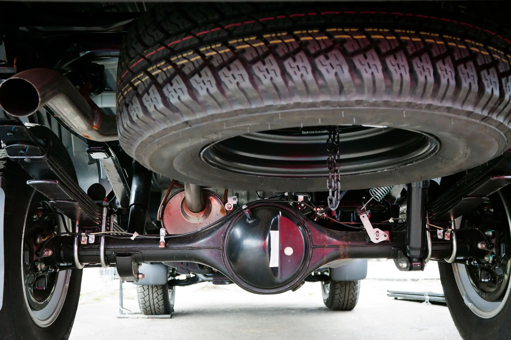
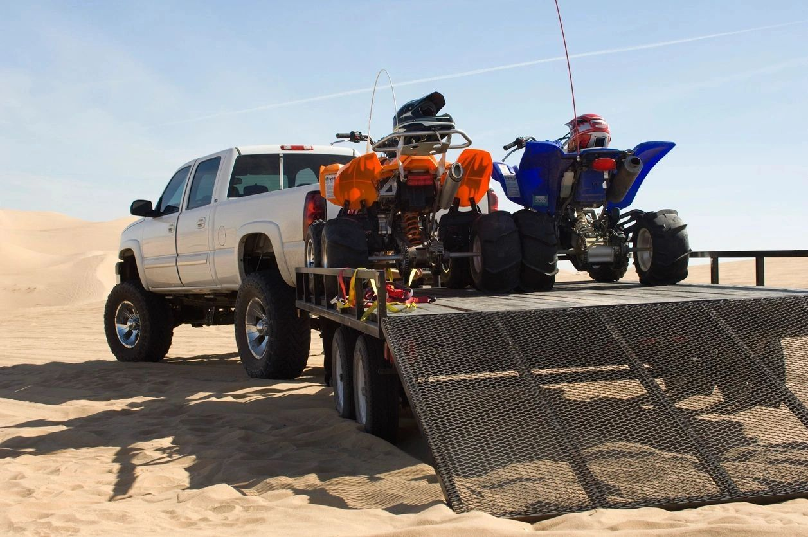
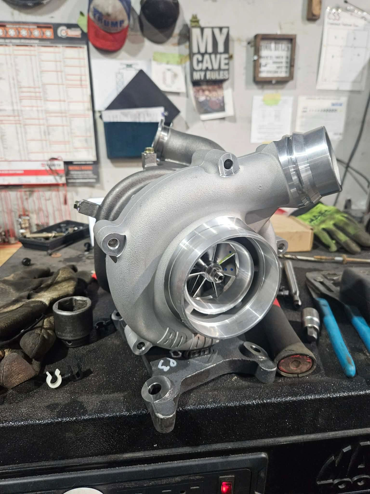
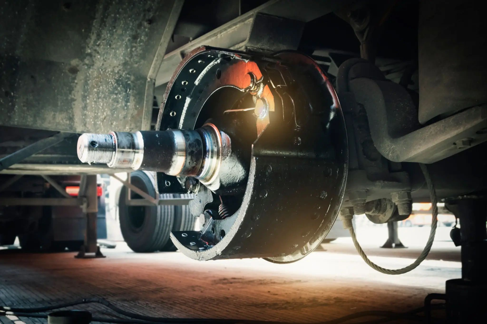
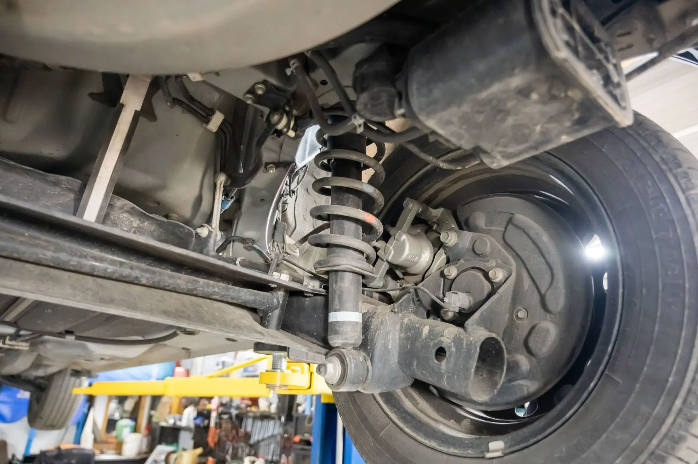
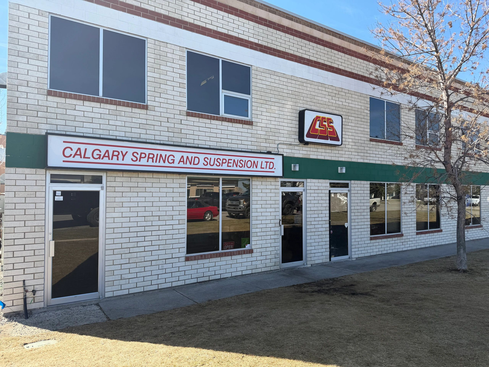

When the load gets heavy,
we get to work.
Spring, suspension, axle, trailer and diesel service in Calgary. Family-owned. Hands-on. Here since 1991.

WORK THAT HOLDS UP.Repair the part.
Respect the whole vehicle.
From a single worn component to a custom suspension setup, find the right place to start.

Spring & suspension
Spring and suspension inspection and repair for light- and heavy-duty vehicles.
Explore service ↗
Axle & differential
Axle repair and differential diagnosis for passenger vehicles, trucks, 4WD and off-road vehicles.
Explore service ↗
Custom ride height
Suspension raising and lowering tailored to your vehicle and goals.
Explore service ↗
Trailer repair
Trailer inspections, maintenance and repairs for a wide range of trailers.
Explore service ↗
Automotive service
Practical maintenance and repair for cars, trucks and heavy-duty vehicles.
Explore service ↗
Performance diesel
Diagnostics, maintenance and repair support for diesel performance and reliability.
Explore service ↗


Real work.
Real people.
Calgary Spring and Suspension built its reputation on practical advice, careful diagnosis and work meant to last. The shop serves drivers in Calgary and supports the trucking industry across Alberta.
Get to know the shop ↗Trust is earned in the bay.
Feedback shared on the current Calgary Spring and Suspension website.
“Best shop hands down. Called 3 different places to get my leaf springs replaced and actually got treated like a human being at this shop, and they had my truck back to me the next day. Couldn’t recommend them more!
Jay B.
“Extremely satisfied customer here! Great customer service, prompt work, and very informative staff. In and out, no surprises! Highly recommended.
Tricia O.
“We highly recommend Calgary Spring and Suspension. We were on the road in our RV and needed a major suspension repair. Josh had to secure the parts and then stayed after hours to get the job done so we could be on our way. We were extremely pleased with his and his co-workers service and know you will be too.
Holly C.
Let’s get you moving.
Tell us what your vehicle is doing. We’ll help you find the next step.